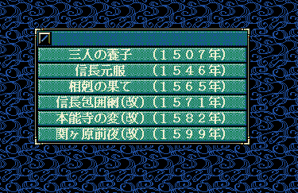

そうです、シナリオ名や、シナリオの詳細文面が、書きかれられてしまっていることです。
-


これをデフォルトの状態に戻すのにはどうすればよいのでしょうか？
｢基本駆動関数.cpp｣の中身を書き換えてしまうのでしょうか？
いいえ。
｢基本駆動関数.h｣や｢基本駆動関数.cpp｣は書き換えるべきではないと、ありました。
では、どうすれば良いのか？
そうです、｢カスタム駆動関数.h｣や｢カスタム駆動関数.cpp｣にて、書き換えてあることを無効化してしまえば良い、ということです。
void Set_シナリオ１() {;} // シナリオ１のタイトル名や詳細説明の置き換え
void Set_シナリオ２() {;} // シナリオ２の〃
void Set_シナリオ３() {;} // シナリオ３の〃
void Set_シナリオ４() {;} // シナリオ４の〃
void Set_シナリオ５() {;} // シナリオ５の〃
void Set_シナリオ６() {;} // シナリオ６の〃
が追加されいます。 これで、｢基本駆動関数.h｣や｢基本駆動関数.cpp｣で記載されている同じメソッドと同一の名前の(Set_シナリオ１～Set_シナリオ６)を使って、
カスタムにて上書きしたということになります。
それぞれのメソッドをどういった中身で上書きしたかといえば
{;}
即ち、｢何もしない｣という内容で上書きしたことになるのです。まとめるとこうなります。
- 元々、｢基本｣のSet_シナリオ１～Set_シナリオ６では、シナリオ名やシナリオの説明文を｢変更する｣という内容のプログラムであった。
- しかし、それでは困るので、｢カスタム｣で｢何もしない｣というプログラムで、全く同じメソッドを｢上書き｣した。
- 以上から、｢基本駆動関数.h｣や｢基本駆動関数.cpp｣を直接書き換えることなく、｢カスタム駆動関数.h｣を書き換えて、無効化するという目的を達成できた。
天翔記フォルダへと反映させ、天翔記を起動して変化を確認してみましょう。
シナリオ名や説明文が、元へと戻っていることを確認出来れば、この練習項目は終了です。
お疲れ様でした。